Guide de
l'utilisateur
AI Act · L'essentiel
La formation à la maîtrise de l'IA exigée par l'article 4 du règlement européen sur l'intelligence artificielle, en 4 niveaux courts et concrets.
4 niveaux · 8 modules8 vidéos sous-titréesWeb et Moodle (SCORM 1.2)Évaluation finale et attestationDémo en anglais
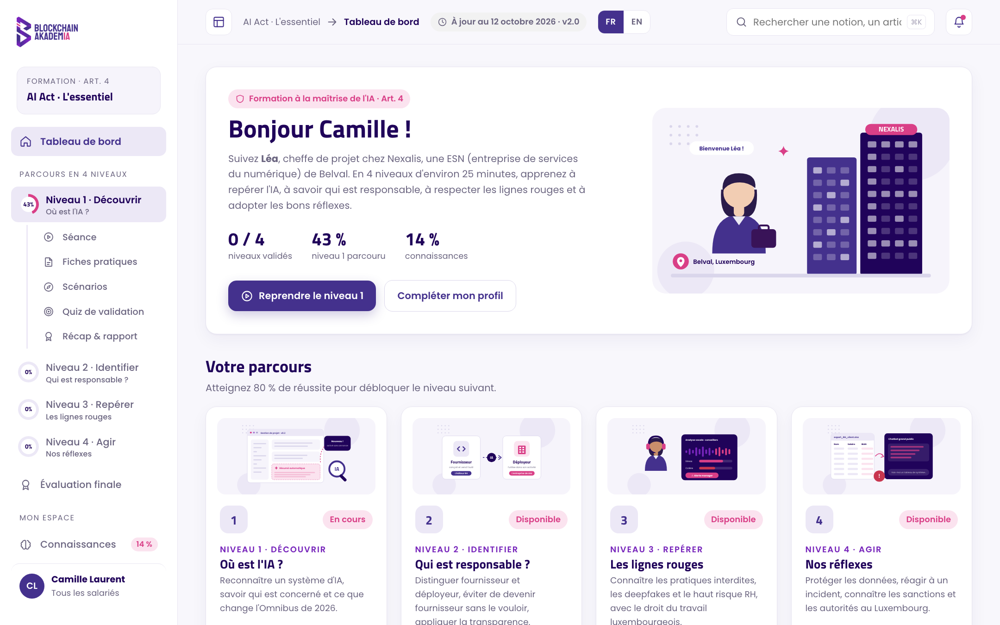
 Guide de l'utilisateur · AI Act · L'essentiel
Guide de l'utilisateur · AI Act · L'essentielSommaire
Ce que vous trouverez dans ce guide
01Le produit en brefp. 3
02Le parcours en 4 niveauxp. 4
03Comment se déroule un niveaup. 5
04S'entraîner et validerp. 7
05L'espace de l'apprenantp. 8
06Déployer la formation : web ou Moodlep. 9
07Suivi, preuves et donnéesp. 10
08Accessibilité et configuration requisep. 11
09Version anglaise (démonstration)p. 12
10Questions fréquentesp. 13
En bref
4niveaux progressifs, de la découverte aux réflexes
≈ 25 minpar niveau, pour s'intégrer dans une journée de travail
8fiches pratiques à télécharger en PDF
12scénarios pour s'entraîner en situation
48questions de validation, tirées au hasard
80 %seuil de réussite, niveau par niveau
5paquets SCORM 1.2 prêts pour Moodle
0donnée envoyée à un service tiers
Blockchain AkademIA2
01 · Le produit en bref
01 · Le produit en bref
Former vos équipes à l'IA, simplement et avec des preuves
Depuis le 2 février 2025, l'article 4 de l'AI Act demande aux entreprises qui utilisent l'IA de prendre des mesures pour que les personnes qui s'en servent comprennent ce qu'elles font. AI Act · L'essentiel est une formation en ligne clé en main qui répond à cette obligation.
Pour qui ?
Tous ceux qui utilisent l'IA pour le compte de l'entreprise. Chacun indique son métier, et la plateforme met en avant ce qui le concerne.
- Tous les salariés, intérimaires, stagiaires, freelances en régie
- Développeurs, data, intégrateurs
- RH et managers
- Commerciaux, avant-vente, chefs de projet
- Direction, juridique, DPO
Ce que la formation apporte
- Comprendre : reconnaître un système d'IA, les rôles et les niveaux de risque
- Appliquer : transparence, lignes rouges, haut risque RH, protection des données
- Réagir : incidents, sanctions, autorités compétentes au Luxembourg
- Prouver : scores, rapports et attestation de suivi pour votre registre interne
Une histoire qui sert de fil rouge
Le cours suit Nexalis, une entreprise de services numériques de 180 salariés installée à Belval. Chaque notion part d'une situation vécue par ses équipes : une fonction d'IA apparue après une mise à jour, un chatbot livré à une banque, un tri de 800 candidatures, un vendredi soir chargé…
Léa · cheffe de projetClaire · DPOJulien · managerPaul · développeur freelanceKarim · avant-venteTom · développeurSofia · DRHNora · consultante
À jourLe contenu intègre l'Omnibus sur l'IA de 2026. La date de mise à jour est affichée en permanence en haut de la plateforme et sur chaque document imprimé.
Bon à savoirAucun certificat officiel n'est exigé par l'article 4. Un registre interne qui indique qui a été formé, quand et avec quel résultat suffit : la plateforme vous fournit ces éléments.
Blockchain AkademIA3
02 · Le parcours en 4 niveaux
02 · Le parcours
4 niveaux, du plus simple au plus concret
Chaque niveau se débloque quand le précédent est validé. Chacun contient 2 modules, 2 vidéos, 2 fiches pratiques, 3 scénarios et un quiz de validation.
1
DécouvrirOù est l'IA ?
Reconnaître un système d'IA, savoir qui est concerné et ce que change l'Omnibus de 2026.
Module 1 · Reconnaître une IAModule 2 · Se former : l'article 4
2
IdentifierQui est responsable ?
Distinguer fournisseur et déployeur, éviter de devenir fournisseur sans le vouloir, appliquer la transparence.
Module 1 · Fournisseur ou déployeurModule 2 · Modèles et transparence
3
RepérerLes lignes rouges
Connaître les pratiques interdites, les deepfakes et le haut risque RH, avec le droit du travail luxembourgeois.
Module 1 · Les pratiques interditesModule 2 · Le haut risque RH
4
AgirNos réflexes
Protéger les données, réagir à un incident, connaître les sanctions et les autorités au Luxembourg.
Module 1 · Données et RGPDModule 2 · Incidents, sanctions, autorités
Final
Évaluation finale
Une fois les 4 niveaux validés : 20 questions sur l'ensemble du parcours, seuil de 80 %. Son résultat figure sur l'attestation de suivi.
Blockchain AkademIA4
03 · Comment se déroule un niveau
03 · Un niveau, étape par étape
Comprendre, s'entraîner, valider
1Vidéo de présentationChaque module s'ouvre sur une vidéo sous-titrée qui pose le sujet et présente le personnage suivi.
≈ 1 min 15
2SéanceMises en situation, questions, explications et extraits d'articles de loi, dans l'ordre de l'histoire. Chaque réponse est corrigée et expliquée tout de suite.
≈ 25 min
3Fiches pratiquesDeux fiches par niveau, débloquées au fil de la séance. En PDF, chacune devient un document de 3 pages qui reprend tout le module.
1 min 30
4ScénariosTrois cas concrets par niveau : on choisit une réaction et on découvre ses conséquences, avec la bonne pratique et sa base légale.
7 min
5Quiz de validation6 questions tirées au hasard parmi 12. Il faut 5 bonnes réponses sur 6. Tentatives illimitées, avec un nouveau tirage à chaque fois.
5 min
6Récap & rapportUne fiche récap des points clés et un rapport détaillé de toutes les réponses, à télécharger en PDF.
3 min
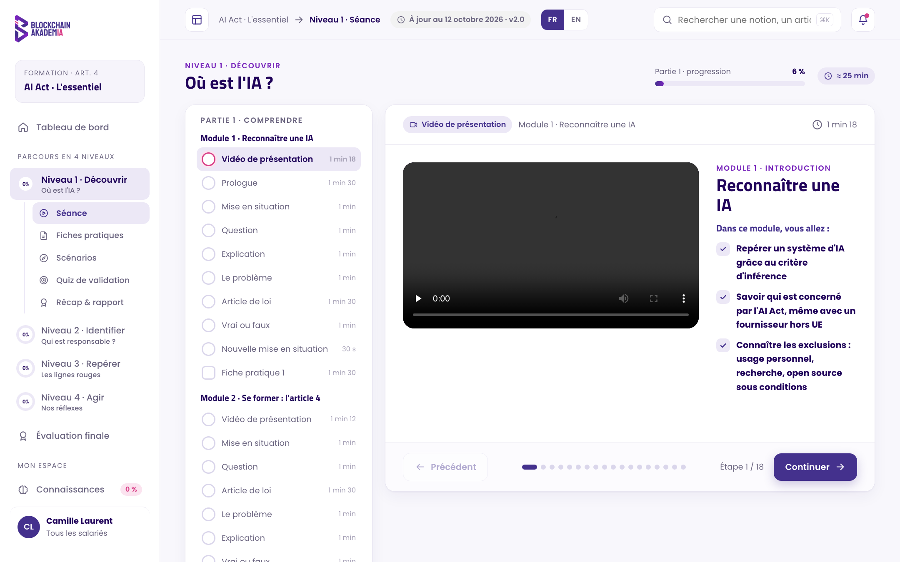
La vidéo de présentation et les objectifs du module
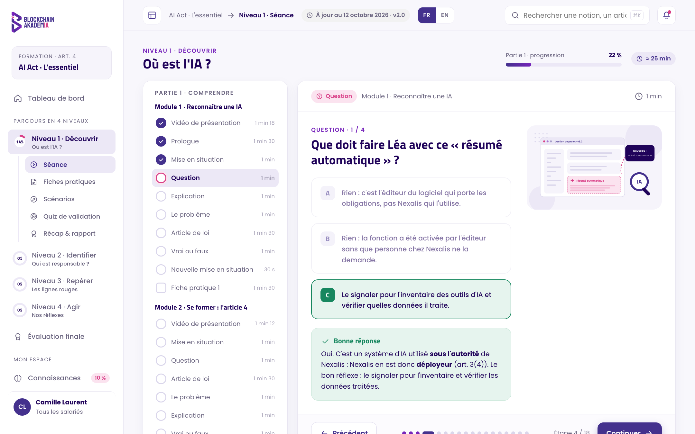
Une question de la séance, corrigée et expliquée
Validation d'un niveauAu moins 80 % de bonnes réponses sur la séance et les scénarios, et le quiz de validation réussi. Les questions ratées peuvent être retentées.
Blockchain AkademIA5
03 · Comment se déroule un niveau
03 · Un niveau, étape par étape
Des fiches pratiques à garder
Les 8 fiches pratiques résument l'essentiel en un coup d'œil : niveaux de risque, calendrier, rôles, transparence, lignes rouges, haut risque RH, autres textes, sanctions.
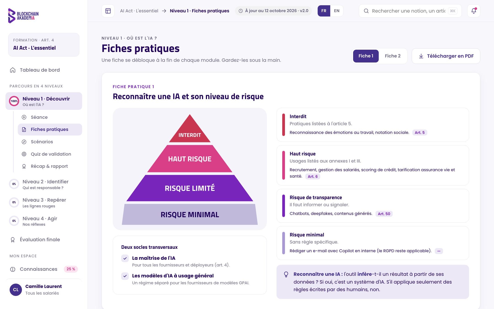
La fiche pratique 1 dans la plateforme
Le PDF : une vraie fiche d'information
- Les objectifs du module et la date de mise à jour
- La synthèse visuelle en un coup d'œil
- Le cours en détail : explications, extraits de loi, points à retenir
- Tous les cas pratiques du module
- Les questions clés avec leurs réponses expliquées
- Les textes cités et les contacts utiles (DPO, CNPD, AI Act Service Desk)
AstuceLes fiches restent accessibles après la formation, dans le menu Fiches pratiques de chaque niveau et sur la page Ressources.
Blockchain AkademIA6
04 · S'entraîner et valider
04 · S'entraîner et valider
Des scénarios, un quiz et un rapport
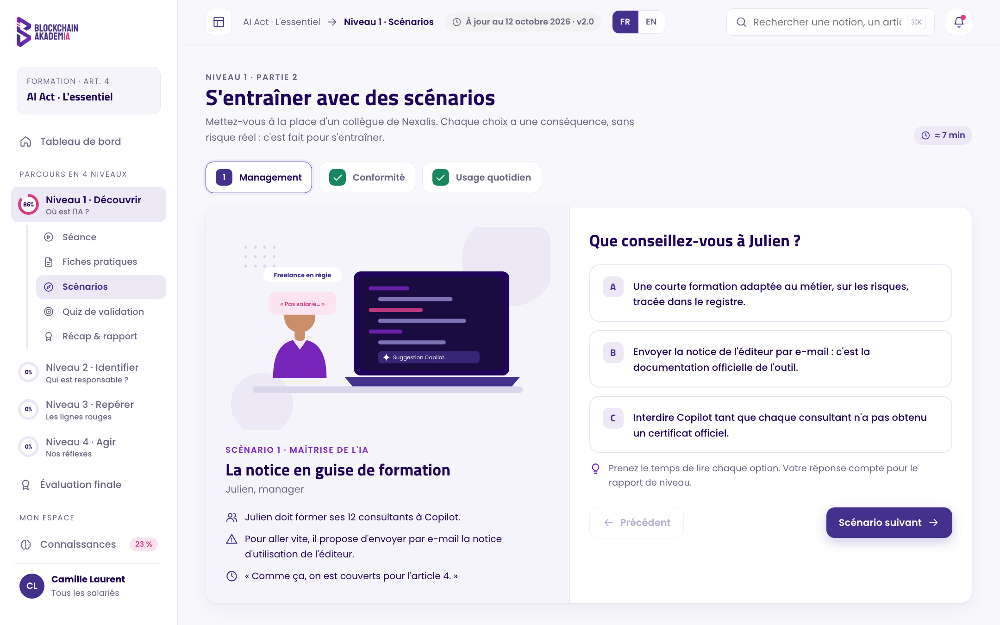
Un scénario : choisir sa réaction et en voir les conséquences
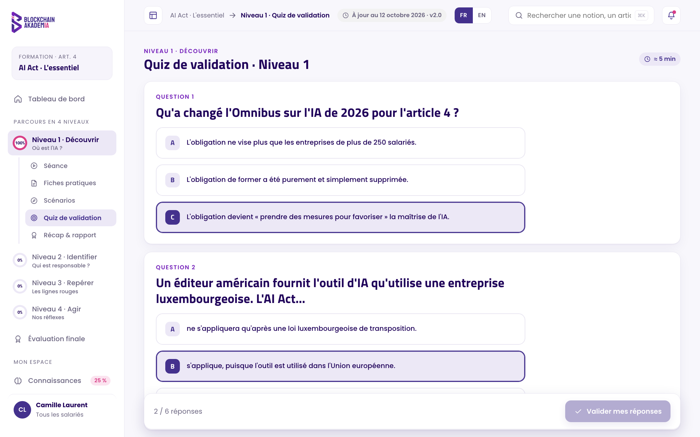
Le quiz de validation : 6 questions tirées au hasard
Les scénarios
Chaque réponse est classée « bonne réponse », « à nuancer » ou « à éviter », avec la conséquence concrète, la bonne pratique et l'article concerné.
Le quiz de validation
L'ordre des réponses change à chaque tentative, pour vérifier la compréhension plutôt que la mémoire. La correction complète s'affiche après chaque tentative.
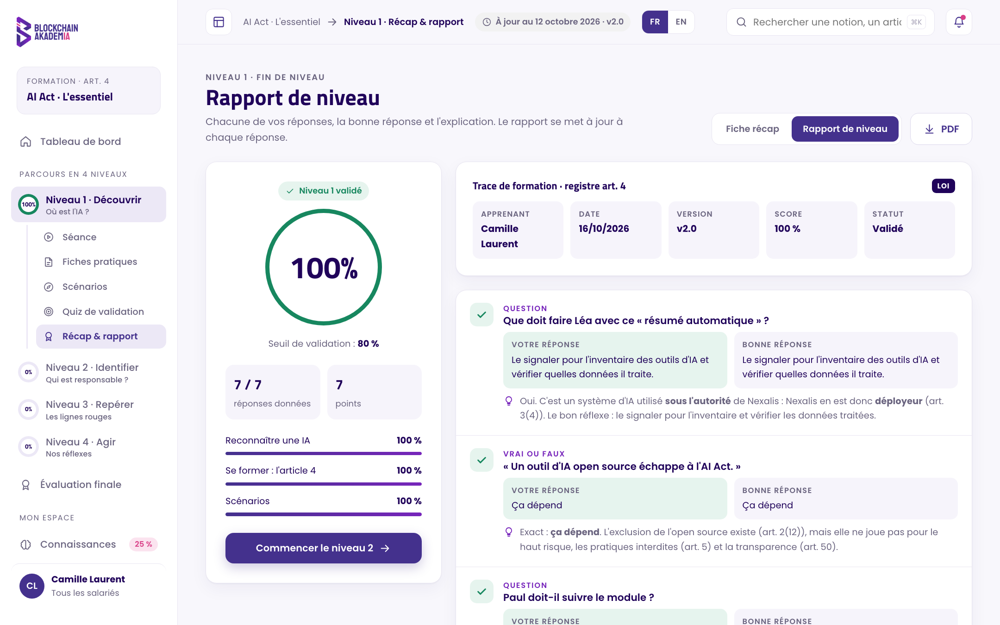
Le rapport de niveau, téléchargeable en PDF
Le rapport de niveau
- Score global et score par thème
- Chaque réponse donnée, la bonne réponse et l'explication
- La trace de formation : apprenant, date, version du contenu, score, statut
Blockchain AkademIA7
05 · L'espace de l'apprenant
05 · L'espace de l'apprenant
Tout est à portée de main
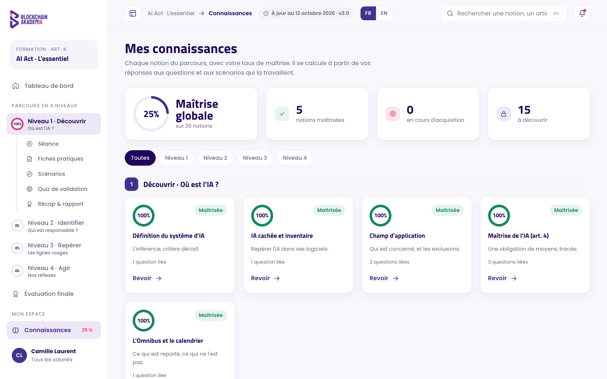
Mes connaissances : le niveau de maîtrise par notion
| Espace | À quoi il sert |
|---|
| Tableau de bord | La progression des 4 niveaux et un accès direct pour reprendre là où l'on s'était arrêté. |
| Connaissances | Le taux de maîtrise de chaque notion, calculé à partir des réponses, avec un lien pour la retravailler. |
| Ressources | Les fiches pratiques, les textes officiels et des ressources externes pour aller plus loin. |
| Mon profil | Nom, métier, progression détaillée, attestation de suivi en PDF et options de confort de lecture. On y accède par la carte en bas du menu. |
| Recherche | Retrouver une notion ou un article en un instant, avec ⌘K ou Ctrl K. |
| Rappels | Des rappels à J+7 et J+30 après la validation d'un niveau, sous forme d'affirmations à vérifier (vrai, faux ou ça dépend), pour ancrer les acquis. |
Plus de placeSur ordinateur, le bouton en haut à gauche masque le menu pour afficher le cours en plein écran. Le choix est mémorisé.
Blockchain AkademIA8
06 · Déployer la formation
06 · Déployer la formation
Deux façons de diffuser
Version web
Un fichier AI_Act_BA.html et un dossier videos, à garder côte à côte. Rien à installer : on ouvre le fichier dans un navigateur.
- Idéal pour une démonstration ou un petit groupe
- Bouton FR | EN : niveau 1 disponible en anglais
- Les 4 niveaux et l'évaluation finale en un seul fichier
- Progression enregistrée dans le navigateur de chaque personne
Moodle (SCORM 1.2)
Un paquet par niveau, plus un paquet pour l'évaluation finale. Les vidéos sont incluses dans chaque paquet.
- Suivi centralisé par votre plateforme de formation
- Scores, statuts et réponses remontés automatiquement
- Reprise là où l'apprenant s'était arrêté
Installer dans Moodle
- Dans le cours : Ajouter une activité › Paquetage SCORM, puis déposer le zip du niveau 1.
- Régler l'activité : note « la plus haute », tentatives illimitées, achèvement « doit obtenir le statut Réussi », affichage dans la fenêtre courante.
- Répéter pour les niveaux 2, 3 et 4, puis pour AI_Act_BA_Evaluation_finale_SCORM12.zip.
- Enchaîner les activités avec Restreindre l'accès › Achèvement d'activité de l'activité précédente.
- Faire un essai complet avec un compte test avant d'ouvrir la formation aux équipes.
| Paquet | Contenu | Taille |
|---|
| Niveau 1 à 4 | Le niveau complet, ses 2 vidéos et ses fiches | 17 à 19 Mo chacun |
| Évaluation finale | 20 questions sur les 4 niveaux | < 1 Mo |
Blockchain AkademIA9
07 · Suivi, preuves et données
07 · Suivi, preuves et données
Pouvoir prouver la formation
L'article 4 n'exige pas de certificat, mais vous devez pouvoir montrer ce que vous avez mis en place. La plateforme produit les éléments de votre registre interne.
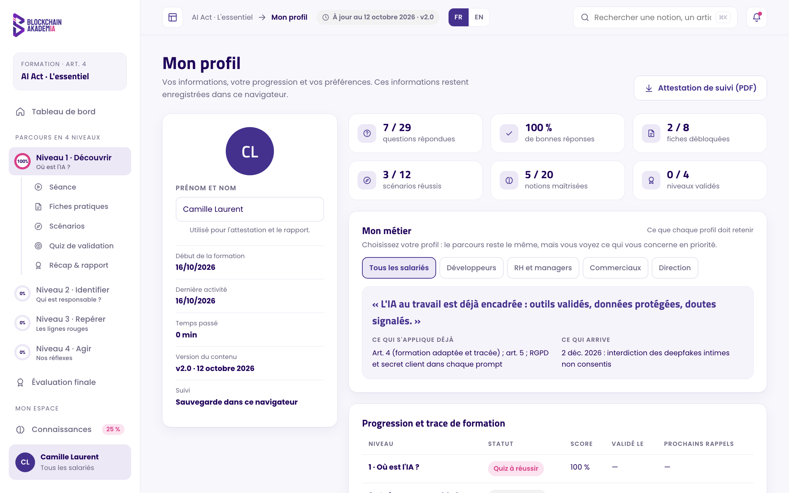
Le profil : progression, trace de formation, attestation
Ce que Moodle reçoit
- Le statut réussi ou échoué et la note sur 100
- Chaque réponse (rapport « Interactions »)
- La page en cours, pour la reprise
- Le temps de session
- La progression complète
Pour un niveau, la note transmise est la plus basse entre l'entraînement (séance et scénarios) et le meilleur quiz.
Attestation de suivi
Un PDF au nom de l'apprenant : statut et score de chaque niveau, résultat de l'évaluation finale, dates, temps passé, version du contenu.
Rapports de niveau
Le détail de chaque réponse, à archiver avec le registre des formations.
Version du contenu
Chaque document indique la date de mise à jour du contenu, pour savoir précisément sur quelle version chacun a été formé.
Données personnellesLa plateforme n'envoie aucune donnée à un service tiers. En version web, la progression reste dans le navigateur de l'apprenant. En version Moodle, elle est stockée dans votre Moodle.
Option sur demandeTemps régulé : chaque page de cours reste affichée au moins un tiers du temps indiqué et chaque vidéo doit être vue en entier avant de passer à la suite. Aucun minimum sur les questions et les mises en situation.
Blockchain AkademIA10
08 · Accessibilité et configuration requise
08 · Accessibilité et configuration
Pensée pour tout le monde
Confort et accessibilité
- Vidéos avec sous-titres incrustés, lisibles partout
- Trois tailles de texte : normale, grande, très grande
- Option pour réduire les animations
- Navigation au clavier et lien d'accès direct au contenu
- Documents PDF propres, sans élément coupé entre deux pages
Configuration requise
- Un navigateur récent : Chrome, Edge, Firefox ou Safari
- Ordinateur recommandé ; tablette et mobile possibles
- Haut-parleurs ou casque pour les vidéos (les sous-titres permettent de s'en passer)
- Aucune installation, aucun compte à créer en version web
- Pour Moodle : prise en charge des paquets SCORM 1.2
Imprimer et télécharger
| Document | Où le trouver |
|---|
| Fiches pratiques (8) | Dans la séance, le menu Fiches pratiques et la page Ressources : bouton PDF. |
| Fiche récap (1 par niveau) | Page Récap & rapport, onglet « Fiche récap ». |
| Rapport de niveau | Page Récap & rapport, onglet « Rapport de niveau ». |
| Attestation de suivi | Mon profil, et page de l'évaluation finale une fois réussie. |
Les documents s'ouvrent dans la fenêtre d'impression du navigateur : choisir « Enregistrer au format PDF » comme destination.
Blockchain AkademIA11
09 · Version anglaise (démonstration)
09 · Version anglaise
Montrer la formation en anglais
Un bouton FR | EN, en haut de chaque page de la version web, fait passer la plateforme en anglais. Cette version de démonstration couvre aujourd'hui le niveau 1 complet.
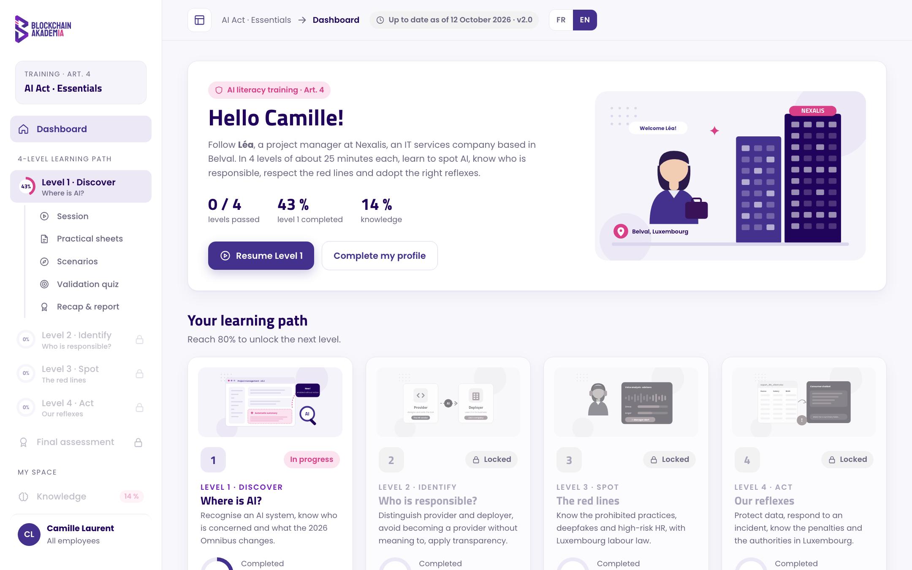
Le tableau de bord en anglais
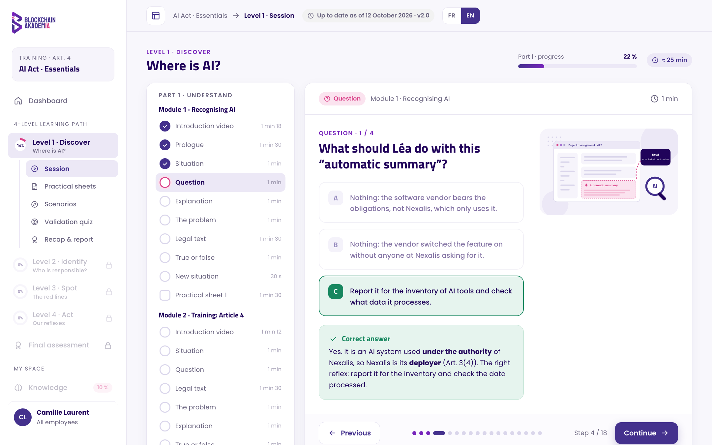
Une question de la séance, corrigée en anglais
Disponible en anglais
- Le niveau 1 entier : séance, fiches pratiques et leurs PDF, scénarios, quiz de validation, récap et rapport
- Les 2 vidéos du niveau 1, avec sous-titres et illustrations en anglais
- Le tableau de bord, le menu et la page « My profile », avec l'attestation de suivi
Bon à savoir
- Le français reste la langue par défaut : rien ne change tant qu'on ne clique pas sur EN
- Le choix de langue est mémorisé ; la progression est commune aux deux langues
- En anglais, les niveaux 2 à 4, l'évaluation finale, Connaissances et Ressources sont grisés
- Les paquets Moodle (SCORM) restent en français
Sur demandeLa traduction peut être étendue aux 4 niveaux et aux paquets Moodle. Les termes juridiques reprennent ceux de la version anglaise officielle du règlement (AI system, deployer, AI literacy…).
Blockchain AkademIA12
10 · Questions fréquentes
10 · Questions fréquentes
Les réponses aux questions courantes
La vidéo affiche « bientôt disponible ».
En version web, le dossier videos doit se trouver à côté du fichier AI_Act_BA.html, avec ses noms de fichiers d'origine. Le plus simple : transmettre et décompresser le dossier complet.
Un niveau est verrouillé.
Chaque niveau s'ouvre quand le précédent est validé : 80 % sur la séance et les scénarios, et le quiz de validation réussi. Dans Moodle, l'ordre se règle avec « Restreindre l'accès ».
J'ai raté le quiz de validation.
Les tentatives sont illimitées. Chaque nouvelle tentative tire d'autres questions et mélange l'ordre des réponses. La correction de la tentative précédente reste consultable.
Mon score est sous 80 %.
Sur la page Récap & rapport, le bouton « Retenter les questions ratées » permet de reprendre uniquement les questions concernées.
J'ai perdu ma progression.
En version web, la progression est liée au navigateur et à l'ordinateur utilisés. Un autre navigateur, une navigation privée ou un effacement des données repartent de zéro. Dans Moodle, la progression suit le compte de l'apprenant.
Un texte s'imprime en haut des pages PDF.
Certains navigateurs ajoutent leurs propres en-têtes. Dans la fenêtre d'impression, décocher « En-têtes et pieds de page ».
Le contenu sera-t-il mis à jour ?
Oui. L'AI Act s'applique par étapes jusqu'en 2028. Le contenu est daté et versionné ; les prochaines révisions sont prévues début 2027, puis avant décembre 2027.
Comment passer la plateforme en anglais ?
Cliquer sur EN en haut de la page (version web). Cliquer sur FR pour revenir au français.
Blockchain AkademIA13
Une question, un besoin ?
Votre interlocuteur Blockchain AkademIA vous accompagne pour le déploiement de la formation, son adaptation à votre organisation et ses mises à jour.
AI Act · L'essentiel · Guide de l'utilisateur · Version 2.0 · Contenu à jour au 12 octobre 2026